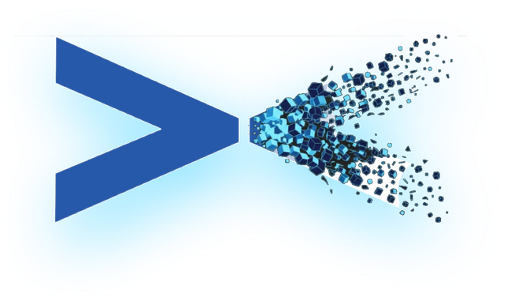

DIGITAL TWIN STUDIOS
Grounded in human experience.
CampusCompanyCityCommunity
We build spatial intelligence tools for the places that shape how people learn, work, govern, and live together. Every twin is a living ecosystem — from the first capture to the final engagement.
